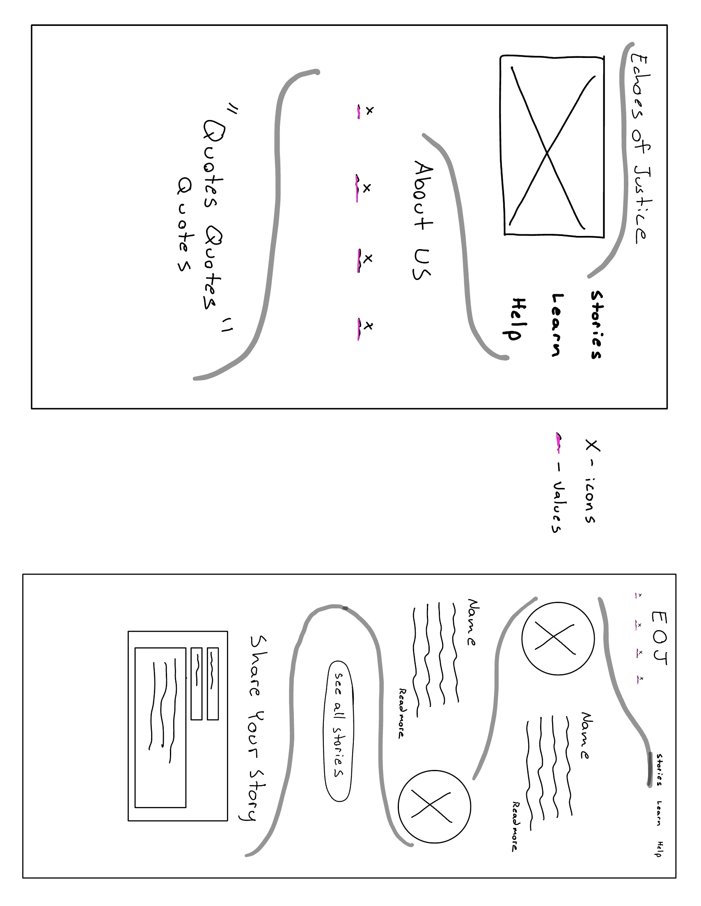
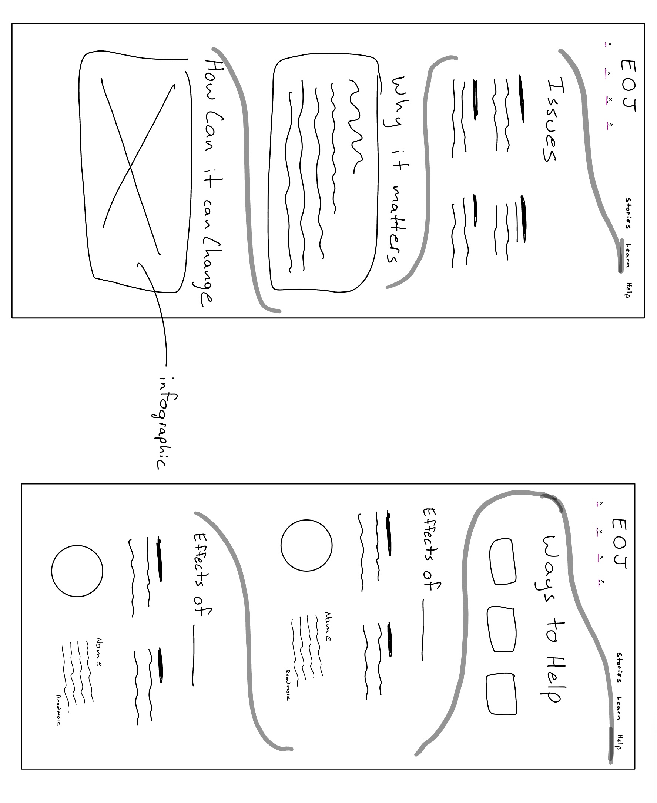

Inspiration from Art

Analyzing a Piece and Creating a UI Sketch
Calida Rawles's "High Tide, Heavy Armor"
In this post, I will be analyzing a piece of art and using it as inspiration for a UI sketch. I will discuss the three areas of analysis, and how they inspire me.
Calida Rawles's painting "High Tide, Heavy Armor" (2021) sheds light on the serious issues of racial injustice and police violence, particularly inspired by Kurt Reinhold's death in 2020. Using acrylic paints on a canvas, Rawles shows a man resembling Reinhold, bringing attention to the dangers Black individuals often face with law enforcement. This piece of art, now held at the San Francisco Museum of Modern Art, goes beyond just being a painting—it tells a story of the ongoing struggle against racial injustice and the need for change.
I chose this photo because this is a piece that really is visually captivating. Every time that I see it. It is balanced, simple, and sticks to the point. The leading lines (waves) in this piece help guide your eyes to the subject and there are no distractions. I think it is inspiring because its elements are in a different domain. Even though, its intent is still to communicate just like it is in design. The element of communication is kin in both, which was the thing that was the most inspiring. The question is how do you communicate something in a visual language? The most important response to this question is what this piece and design have in common. It is visually simple, guiding, and direct.
Analysis of the Art:
Picture Layout: This painting has a strong layout that easily grabs our attention. The person is placed right in the middle, but the waves around them make the whole scene really lively. The waves create paths that our eyes naturally follow, leading us right to the person. It's like the waves are a roadmap for our eyes. This leads us to the subject despite where the waves catch your attention due to the sharp contrast.
Colors: Rawles used a simple color pallet with just shades of blue and brown. These colors make the painting feel calm and easy to look at. The way the light shines on the waves and the person is soft but still makes them stand out. Our eyes are attracted to the highlights in an image, and then the lines of the waves (created by the shades of the color) or the contrast of color lead us to the subject.
Conveying a Message: This painting makes people feel deep emotions. The person in the middle of the waves can represent many ideas. Every viewer might see a different story in this painting, and that's what makes it special.
A good website or app, like the painting, is more than just nice to look at. It should connect with users and make them think and feel. It should be designed in a way to do this, just like how the artist used layout, colors, and light to bring the painting to life. Each user should feel like the website or app is speaking directly to them, sharing the correct things that the site is trying to communicate.
UI Sketch:
For my sketch, I wanted to think about a site that is focused on informing the user about racial injustice, police violence, and legal education. Keeping in theme with the painting, how would the same message be represented as a user interface? This is what I came up with:
 I tried to make the design allow users to share and read stories related to social justice issues, fostering a community of support and awareness. I think the design captures the essence of the painting by incorporating the same balance between simplicity and emotion. The homepage features quotes that transition smoothly, an about section, and an impactful visual centerpiece akin to the central figure in the painting. The lines are designed to help guide the users eyes down the page as well as help give signifiers to where they are and what they should look at next.
Insightful Learning
Through this process, the realization dawns that art and UI design are deeply intertwined; both are visual mediums aiming to convey a narrative and evoke emotion. The painting’s ability to communicate complex emotions and stories without words has underscored the importance of visual storytelling within UI design. Every element, from color to layout, becomes a crucial part of the narrative, each contributing to the user's journey and experience.